Projet 06 - Mettez en place des process et des outils
Posted on Tue 16 February 2021 in Accueil
Nous mettrons en place dans cet article un pipeline quasi complet sur un environnement local.
Pour cela plusieurs étapes seront faites :
- Création d'un certificat
- Installation de gitlab en local sur une VM Vagrant
- Installation du gitlab-runner de PréProduction sur une autre VM
- Installation du gitlab-runner de Production sur une autre VM
- Création du pipeline
Schéma du processus de déploiement
Le but ici est de mettre en place le processus suivant :
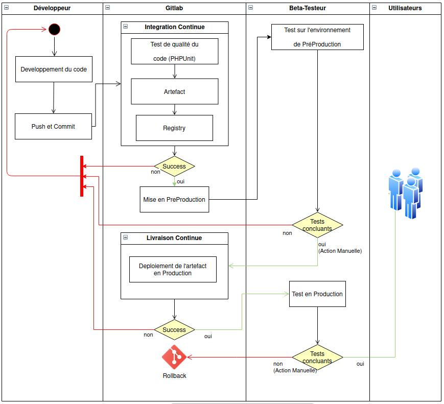
Toutes ces étapes seront reprises dans le fichier .gitlab-ci.xml qui sera décrit plus loin dans cet article.
Création d'un certificat
Je vous propose de ne pas utiliser lentsencrypt dans cet article mais de faire en sorte de devenir sa propre autorité de certification. En général une autorité de certification permet de garantir à un utilisateur lambda que le certificat que vous allez lui présenter correspond bien à ce que vous prétendez et ce sans devoir chercher à le vérifier lui-même. Pour que cela fonctionne, il faut que le client en question fasse déjà confiance à cette autorité.
Or si vous êtes votre propre autorité, personne ne vous fera confiance. En fait ceci n'est utile que dans deux cas. Le premier pour faire des tests sans devoir payer (relativement cher). Le deuxième pour avoir des certificats SSL sur un parc de clients que vous pouvez maîtriser. Par exemple sur un intranet pour pouvez exiger des clients qu'ils installent votre autorité.
Dans un premier temps nous allons créer notre clé privé, puis nous allons créer notre demande de certificat que nous signerons par lui-même :
seb : $ cd /home/seb/Documents/ownCloud/OpenClassRoom/CA
seb:CA$ openssl genrsa -des3 -out ca.key 2048
Generating RSA private key, 2048 bit long modulus (2 primes)
....................+++++
.....+++++
e is 65537 (0x010001)
Enter pass phrase for ca.key:
139925303420224:error:28078065:UI routines:UI_set_result_ex:result too small:../crypto/ui/ui_lib.c:905:You must type in 4 to 1023 characters
Enter pass phrase for ca.key:
139925303420224:error:2807106B:UI routines:UI_process:processing error:../crypto/ui/ui_lib.c:545:while reading strings
Enter pass phrase for ca.key:
Verifying - Enter pass phrase for ca.key:
seb:CA$ ls -al
total 12
drwxrwxr-x 2 seb seb 4096 févr. 2 17:05 .
drwxrwxr-x 14 seb seb 4096 févr. 2 17:05 ..
-rw------- 1 seb seb 1743 févr. 2 17:05 ca.key
seb:CA$ openssl req -new -key ca.key -out ca.csr
Enter pass phrase for ca.key:
You are about to be asked to enter information that will be incorporated
into your certificate request.
What you are about to enter is what is called a Distinguished Name or a DN.
There are quite a few fields but you can leave some blank
For some fields there will be a default value,
If you enter '.', the field will be left blank.
-----
Country Name (2 letter code) [AU]:FR
State or Province Name (full name) [Some-State]:Paris
Locality Name (eg, city) []:Paris
Organization Name (eg, company) [Internet Widgits Pty Ltd]:Ricky
Organizational Unit Name (eg, section) []:
Common Name (e.g. server FQDN or YOUR name) []:ricky
Email Address []:
Please enter the following 'extra' attributes
to be sent with your certificate request
A challenge password []:
An optional company name []:
seb:CA$ openssl x509 -req -days 3650 -in ca.csr -signkey ca.key -out ca.crt
Signature ok
subject=C = FR, ST = Paris, L = Paris, O = Ricky, CN = ricky
Getting Private key
Enter pass phrase for ca.key:
Vous avez maintenant un certificat que vous pouvez utiliser pour signer tous vos autres certificats. Le certificat est dans ca.crt et sa clé privée dans ca.key.
Maintenant faites les différents certificats pour votre organisation. Créez une clé sans mot de passe pour utiliser sur les serveurs. Ci-dessous, la première ligne est obligatoire car le mot de passe est obligatoire à la création. Dans la deuxième commande on le retire :
seb:CA$ openssl genrsa -des3 -out gitlab.devops.oc.key 1024
Generating RSA private key, 1024 bit long modulus (2 primes)
.....................................................................+++++
..............+++++
e is 65537 (0x010001)
Enter pass phrase for gitlab.devops.oc.key:
Verifying - Enter pass phrase for gitlab.devops.oc.key:
seb:CA$ openssl rsa -in gitlab.devops.oc.key -out gitlab.devops.oc.key
Enter pass phrase for gitlab.devops.oc.key:
140682069476672:error:28078065:UI routines:UI_set_result_ex:result too small:../crypto/ui/ui_lib.c:905:You must type in 4 to 1023 characters
Enter pass phrase for gitlab.devops.oc.key:
writing RSA key
Ensuite on relance une commande pour faire une demande de certificat et une autre pour signez notre certificat avec notre autorité :
seb:CA$ openssl req -new -key gitlab.devops.oc.key -out gitlab.devops.oc.csr
You are about to be asked to enter information that will be incorporated
into your certificate request.
What you are about to enter is what is called a Distinguished Name or a DN.
There are quite a few fields but you can leave some blank
For some fields there will be a default value,
If you enter '.', the field will be left blank.
-----
Country Name (2 letter code) [AU]:FR
State or Province Name (full name) [Some-State]:Paris
Locality Name (eg, city) []:
Organization Name (eg, company) [Internet Widgits Pty Ltd]:devops
Organizational Unit Name (eg, section) []:gitlab
Common Name (e.g. server FQDN or YOUR name) []:gitlab.devops.oc
Email Address []:
Please enter the following 'extra' attributes to be sent with your certificate request
A challenge password []:
An optional company name []:
seb:CA$ openssl x509 -req -in gitlab.devops.oc.csr -out gitlab.devops.oc.crt -CA ca.crt -CAkey ca.key -CAcreateserial
Signature ok
subject=C = FR, ST = Paris, O = devops, OU = gitlab, CN = gitlab.devops.oc
Getting CA Private Key
Enter pass phrase for ca.key:
Vous avez votre nouveau certificat signé par votre autorité dans gitlab.devops.oc.crt et sa clé privée directement utilisable dans gitlab.devops.oc.key (sans mot de passe pour utilisation directe sur un serveur).
Il est temps que vos utilisateurs vous fassent confiance. Pour cela distribuez votre fichier ca.crt et ajoutez le à vos navigateurs.
Dans firefox :
Outils -> options -> avancé -> chiffrement -> afficher les certificats -> autorités -> importer
Puis sélectionnez votre certificat et utilisez pour les site web.
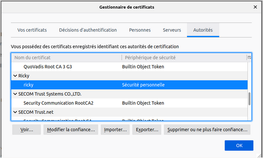
Si votre navigateur refuse le format x509, proposez lui du pkcs12
$ openssl pkcs12 -export -in ca.crt -nokeys -out ca.p12
Installation de gitlab en local sur une VM Vagrant
Vagrantfile
Pour réaliser cette installation nous vous proposons d'utiliser une VM créer via un Vagrantfile. Il faudra ajouter les lignes suivantes pour faire en sorte que gitlab puisse s'installer automatiquement dans votre Vagrantfile :
config.vm.define "gitlab" do |gitlab|
gitlab.vm.hostname = [gitlab_hostname]
gitlab.vm.network "private_network", ip: [gitlab_ip_address]
# Ci-dessous, nous recuperons les certificats que nous venons de créer et nous les mettons dans le repertoires /vagrant de notre VM
gitlab.vm.synced_folder "/home/seb/Documents/ownCloud/OpenClassRoom/Projet_06/SiteVieillot-master/Certificats", "/vagrant"#, type: "nfs"
# Copie du docker-compose.yml que nous vous présentons plus bas dans ce chapitre
gitlab.vm.provision "file" do |file|
file.source = '~/Documents/ownCloud/OpenClassRoom/Projet_06/Vagrant/GitLab_docker-compose.yml'
file.destination = '/home/vagrant/docker-compose.yml'
end
# Nous provisionnons notre VM avec les outils dont nous avons besoin pour travailler
gitlab.vm.provision "shell", inline: <<-SHELL
BASHRCFILE='/home/vagrant/.bashrc'
apt-get update
# Ajout Docker
apt-get install -y apt-transport-https ca-certificates curl gnupg-agent software-properties-common
curl -fsSL https://download.docker.com/linux/debian/gpg | sudo apt-key add -
sudo add-apt-repository "deb [arch=amd64] https://download.docker.com/linux/debian $(lsb_release -cs) stable"
sudo apt-get update
sudo apt-get install -y docker-ce docker-ce-cli containerd.io
usermod -aG docker vagrant
# Ajout Docker Compose
curl -Ls "https://github.com/docker/compose/releases/download/1.27.4/docker-compose-$(uname -s)-$(uname -m)" -o /usr/local/bin/docker-compose
chmod +x /usr/local/bin/docker-compose
# Ajout GitLab
GITLABADD="export GITLAB_HOME=/srv/gitlab"
grep -qFx "$GITLABADD" "$BASHRCFILE" || echo "$GITLABADD" >> "$BASHRCFILE"
# Création des repertoires afin de ne pas perdre le travail
mkdir -p /srv/gitlab
mkdir -p /srv/gitlab/config
mkdir -p /srv/gitlab/logs
mkdir -p /srv/gitlab/data
SHELL
end
Comme vous pouvez le constater dans le Vagrantfile, il faut disposer du fichier GitLab_docker-compose.yml. Le voici :
# Nous utilisons la version 3.8 car notre moteur Docker est supérieur à la version 19.03.0+
version: "3.8"
services:
web:
# vous pouvez aller sur le lien suivant si vous souhaitez plus d'information https://docs.gitlab.com/omnibus/docker/
image: 'gitlab/gitlab-ee:latest'
restart: always
hostname: 'gitlab.example.com'
environment:
VIRTUAL_HOST: gitlab.devops.oc
GITLAB_OMNIBUS_CONFIG: |
external_url 'https://gitlab.devops.oc'
ports:
- '80:80'
- '443:443'
# Redirection du port 22 car déjà utilisé par vagrant --> sudo lsof -i:22
- '5822:22'
# On rajoute le port 5050 qui nous permettra d'utiliser la registry
- '5050:5050'
# On crée nos volumes afin de ne pas perdre notre travail au cas où on supprimerait l'image docker
volumes:
- '${GITLAB_HOME}/config:/etc/gitlab'
- '${GITLAB_HOME}/logs:/var/log/gitlab'
- '${GITLAB_HOME}/data:/var/opt/gitlab'
container_name: gitlab-ee
On copie ensuite nos certifcats gitlab.devops.oc.crt / gitlab.devops.oc.key dans la VM gitlab sous /srv/gitlab/config/ssl :
vagrant@gitlab:/srv/gitlab/config$ sudo mkdir ssl
vagrant@gitlab:/srv/gitlab/config$ sudo cp /vagrant/* ssl/
vagrant@gitlab:/srv/gitlab/config$ cd ssl
vagrant@gitlab:/srv/gitlab/config/ssl$ ls -al
total 24
drwxr-xr-x 2 root root 4096 Feb 15 11:02 .
drwxr-xr-x 3 root root 4096 Feb 15 11:02 ..
-rw-r--r-- 1 root root 1147 Feb 15 11:02 ca.crt
-rw-r--r-- 1 root root 985 Feb 15 11:02 gitlab.devops.oc.crt
-rw-r--r-- 1 root root 631 Feb 15 11:02 gitlab.devops.oc.csr
-rw------- 1 root root 887 Feb 15 11:02 gitlab.devops.oc.key
vagrant@gitlab:/srv/gitlab/config/ssl$ cd /srv/gitlab
vagrant@gitlab:/srv/gitlab$ sudo mkdir ssl
vagrant@gitlab:/srv/gitlab$ sudo cp config/ssl/* ssl/
docker-compose
Une fois votre VM créée et lancé, nous pouvons lancer la construction de notre conteneur.
Se connecter sur la VM gitlab en SSH via la commande : vagrant ssh gitlab
Et on lance la commande docker-compose up -d qui permet de lancer le conteneur Gitlab-ee :
vagrant@gitlab:~$ docker-compose up -d
Creating network "vagrant_default" with the default driver
Pulling web (gitlab/gitlab-ee:latest)...
latest: Pulling from gitlab/gitlab-ee
4007a89234b4: Pull complete
5dfa26c6b9c9: Pull complete
0ba7bf18aa40: Pull complete
4c6ec688ebe3: Pull complete
72eacee67489: Pull complete
365d4a62ba05: Pull complete
bb2049c52331: Pull complete
733d13c75431: Pull complete
2abfb347b972: Pull complete
f85b8ef0c4e3: Extracting [=============>
Cette installation peut prendre une bonne dizaine de minute.
Il est possible de suivre les différentes étapes en regardant les logs directement dans le conteneur :
docker logs –f gitlab-ee
Une fois terminé, on tente la connexion : https://gitlab.devops.oc
Nous devrions arriver sur cette page :
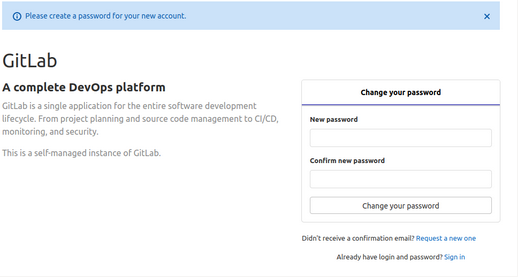
Nous allons désormais configurer notre gitlab pour le reste du projet (registry, etc.)
Pour cela, nous éditons le fichier gitlab.rb
vagrant@gitlab:~$ sudo vim /srv/gitlab/config/gitlab.rb
Puis nous ajoutons à la fin de ce fichier les informations suivantes :
external_url "https://gitlab.devops.oc"
letsencrypt['enable'] = false
nginx['ssl_certificate'] = "/etc/gitlab/ssl/gitlab.devops.oc.crt"
nginx['ssl_certificate_key'] = "/etc/gitlab/ssl/gitlab.devops.oc.key"
registry_external_url "https://gitlab.devops.oc:5050"
registry_nginx['ssl_certificate'] = "/etc/gitlab/ssl/gitlab.devops.oc.crt"
registry_nginx['ssl_certificate_key'] = "/etc/gitlab/ssl/gitlab.devops.oc.key"
nginx['redirect_http_to_https'] = true
registry_nginx['enable'] = true
registry_nginx['listen_port'] = 5050
Il faut ensuite relancer la configuration. Pour cela, nous entrons dans le conteneur gitlab puis nous lançons la commande adéquate :
vagrant@gitlab:~$ docker exec -ti gitlab-ee bash
root@gitlab:/# gitlab-ctl reconfigure
root@gitlab:/# gitlab-ctl restart
L’utilisateur par défaut est root:
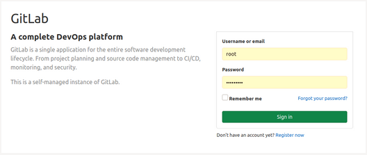
Puis créer un nouvel utilisateur :
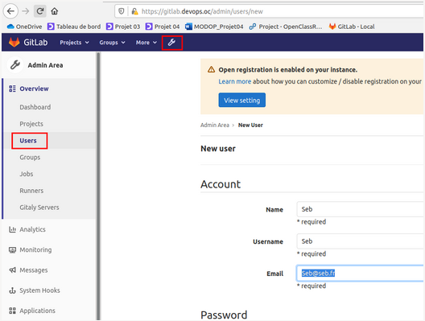
Se deconnecter de root et se logguer avec ce nouveau compte.
Enfin, se connecter avec le compte nouvellement crée puis cliquer sur “Create a project” / Create Blank Project que nous appelerons “projet06” en Public
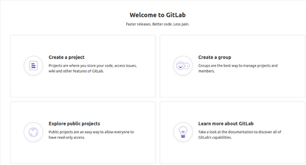
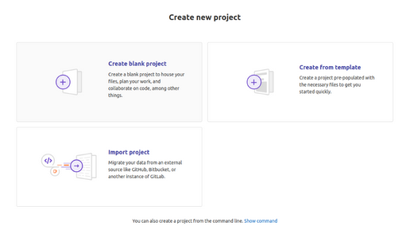
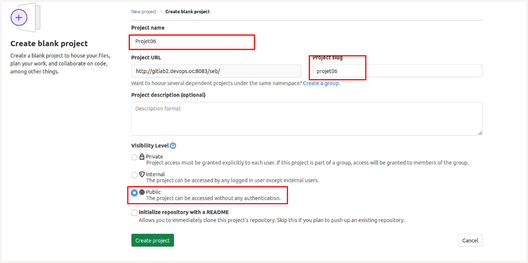
La fenetre suivante devrait apparaitre :
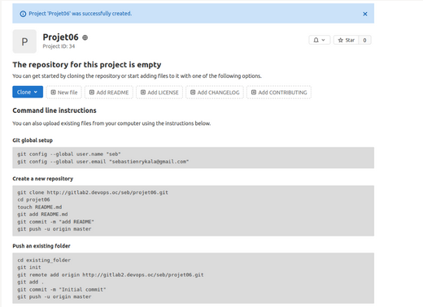
Cliquer ensuite sur “Settings” / “CI/CD” puis “Expand Runner” :
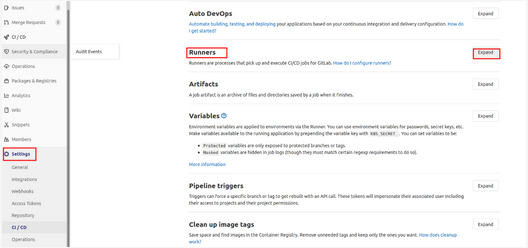
Le but étant de recuperer les infos necessaire à la création d’un runner qui sont lister ci-dessous (une fois la partie Runners ouvertes) :
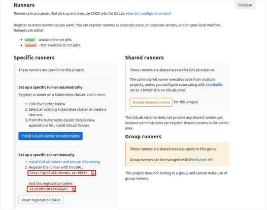
Il est temps de passer à l'installation des Runners sur nos autres environnements de PréProduction et de Production
Installation du gitlab-runner
Cette partie sera valable pour les environnements de PréProduction ainsi que de Production. En effet, pour simuler la "vie réelle", nous disposerons au total de 3 environnements :
- notre serveur GitLab
- notre environnement de PréProduction avec un runner dedié
- notre environnement de Production avec un runner dedié
Voici la partie à rajouter (en plus de Docker et de Docker Compose comme pour la VM GitLab) dans votre Vagrantfile pour ces deux environnements (PréProduction / Production) :
# Ajout GitLab Runner
# Création des repertoires afin de ne pas perdre le travail
mkdir -p /srv/gitlab-runner
mkdir -p /srv/gitlab-runner/config
Vous l'aurez compris, nous créeons uniquement les volumes qui nous serons utile. Le reste se fera via un docker-compose que je vous présente ici :
version: "3.8"
services:
runner:
image: gitlab/gitlab-runner:latest
restart: always
volumes:
- '${GITLABRUNNER_HOME}/config:/etc/gitlab-runner'
- '/var/run/docker.sock:/var/run/docker.sock'
container_name: gitlab-runner
Le principe est donc le meme que pour l'installation de GitLab.
Une fois votre environnement crée, connecteé vous en ssh dessus puis lancer la commande suivante (dans notre exemple ci-dessous nous serons sur notre environnement de PréProduction, il faudra faire la meme chose pour l'environnement de Production) :
vagrant@recette:~$ docker-compose up -d
Creating network "vagrant_default" with the default driver
Pulling runner (gitlab/gitlab-runner:latest)...
latest: Pulling from gitlab/gitlab-runner
da7391352a9b: Pull complete
14428a6d4bcd: Pull complete
2c2d948710f2: Pull complete
a7a5dfeeff72: Pull complete
6f727095f1d5: Pull complete
246f720c7ed0: Pull complete
cc89c760c9c4: Pull complete
Digest: sha256:cff5d359dcc0e1386e37f551bd7b31ec973df856c3dfbf4c278d02bfef8e3585
Status: Downloaded newer image for gitlab/gitlab-runner:latest
Creating gitlab-runner ... done
Nous entrons ensuite dans le conteneur gitlab-runner de notre environnement de recette pour lancer l'enregistrement :
vagrant@recette:/srv/gitlab-runner/config$ docker exec -ti gitlab-runner bash
root@00de709eafcf:/# gitlab-runner register --tls-ca-file=/etc/gitlab-runner/certs/ca.crt
Runtime platform arch=amd64 os=linux pid=123 revision=8fa89735 version=13.6.0
Running in system-mode.
Enter the GitLab instance URL (for example, https://gitlab.com/):
https://gitlab.devops.oc/
Enter the registration token:
1aCQdeqcRVdgSbE55PyC
Enter a description for the runner:
[00de709eafcf]: Recette_Runner
Enter tags for the runner (comma-separated):
Registering runner... succeeded runner=1aCQdeqc
Enter an executor: docker, docker-ssh, shell, ssh, docker+machine, custom, virtualbox, docker-ssh+machine, kubernetes, parallels:
docker
Enter the default Docker image (for example, ruby:2.6):
docker:stable
Runner registered successfully. Feel free to start it, but if it's running already the config should be automatically reloaded!
Faire les modifications suivantes dans le fichier config.toml :
vagrant@recette:/etc/docker$ sudo vim /srv/gitlab-runner/config/config.toml
concurrent = 1
check_interval = 0
[session_server]
session_timeout = 1800
[[runners]]
name = "tt"
url = "https://gitlab.devops.oc/"
token = "NYCqwd_1yWoscb3FW8J8"
tls-ca-file = "/etc/gitlab-runner/certs/ca.crt"
tls-cert-file = "/etc/gitlab-runner/certs/gitlab.devops.oc.crt"
tls-key-file = "/etc/gitlab-runner/certs/gitlab.devops.oc.key"
executor = "docker"
[runners.cache]
Insecure = false
[runners.docker]
tls_verify = false
image = "docker:stable"
privileged = false
disable_entrypoint_overwrite = false
oom_kill_disable = false
disable_cache = false
volumes = [“/var/run/docker.sock:/var/run/docker.sock", "/cache"]
shm_size = 0
Ajouter également (en créant les repertoires) :
vagrant@recette:~$ cd /etc/docker
vagrant@recette:/etc/docker$ sudo mkdir certs.d
vagrant@recette:/etc/docker$ cd certs.d/
vagrant@recette:/etc/docker/certs.d$ sudo mkdir gitlab.devops.oc
vagrant@recette:/etc/docker/certs.d$ cd gitlab.devops.oc/
vagrant@recette:/etc/docker/certs.d/gitlab.devops.oc$ sudo cp -a /vagrant/Certificats/* .
vagrant@recette:/etc/docker/certs.d/gitlab.devops.oc$ sudo mv gitlab.devops.oc.crt gitlab.devops.oc.cert
vagrant@recette:/etc/docker/certs.d/gitlab.devops.oc$ cd ..
vagrant@recette:/etc/docker/certs.d$ sudo cp -Ra gitlab.devops.oc/ gitlab.devops.oc:
Puis faire un test de connexion à la registery :
vagrant@recette:/etc/docker$ docker login gitlab.devops.oc:5050
Authenticating with existing credentials...
WARNING! Your password will be stored unencrypted in /home/vagrant/.docker/config.json.
Configure a credential helper to remove this warning. See
https://docs.docker.com/engine/reference/commandline/login/#credentials-store
Login Succeeded
Si tout est OK, dans GitLab nous devrions voir désormais notre runner actif :
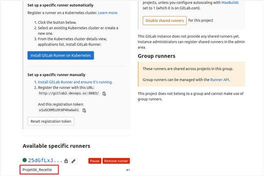
Faire de même sur l'environnement de Production
Création du pipeline
Prérequis
Dans la présentation suivante, nous utiliserons notre environnement de PréProduction. On va dans un premier temps créer un utilisateur qui sera dedié au deploiement et que l’on nomme deployer :
vagrant@recette:~$ sudo adduser deployer
Adding user `deployer' ...
Adding new group `deployer' (1001) ...
Adding new user `deployer' (1001) with group `deployer' ...
Creating home directory `/home/deployer' ...
Copying files from `/etc/skel' ...
New password: OpenClass
Retype new password: OpenClass
passwd: password updated successfully
Changing the user information for deployer
Enter the new value, or press ENTER for the default
Full Name []:
Room Number []:
Work Phone []:
Home Phone []:
Other []:
Is the information correct? [Y/n] y
Puis on l’ajoute dans le groupe docker :
vagrant@recette:~$ sudo usermod -aG docker deployer
Cela permet à l’utilisateur “deployer” d’executer les commandes docker qui sont requis pour réaliser le deploiement
On va ensuite créer une paire de clé privée / public sur notre VM de recette pour l’utilisateur “deployer”. Attention, ne pas mettre de mot de passe car le pipeline execute en mode non interactif les commandes et par conséquent ne pourra pas rentrer le mot de passe :
vagrant@recette:~$ su - deployer
Password: OpenClass
deployer@recette:/home/vagrant$ ssh-keygen -b 4096
Generating public/private rsa key pair.
Enter file in which to save the key (/home/deployer/.ssh/id_rsa):
Created directory '/home/deployer/.ssh'.
Enter passphrase (empty for no passphrase):
Enter same passphrase again:
Your identification has been saved in /home/deployer/.ssh/id_rsa.
Your public key has been saved in /home/deployer/.ssh/id_rsa.pub.
The key fingerprint is:
SHA256:bks0VGM5japqCIx3/CCrKdbJzRwi9hdQxnRO87qBluI deployer@recette
The key's randomart image is:
+---[RSA 4096]----+
| o. + ++ |
| ++ oo+.. |
| o ..o . |
| . o.o |
|o o.+ +S |
|o++.*o.oo. |
|.o=E*+o.+ |
|.oo=o=.o . |
|=. .. . |
+----[SHA256]-----+
deployer@recette:/home/vagrant$
Pour autoriser cette clé SSH, nous devons ajouter la clé public dans le fichier authorized_keys :
deployer@recette:/home/vagrant$ cat ~/.ssh/id_rsa.pub >> ~/.ssh/authorized_keys
Enfin, nous allons stocker notre clé privé dans la variable GitLab afin que notre pipeline puisse se loguer sur notre serveur.
Pour se faire, on navigue dans gitlab dans Settings > CI / CD > Variables puis on clique sur “Add Variable”. Puis renseigner les valeurs suivantes :
- Key: ID_RSA_RECETTE
- Value: Paste your SSH private key from your clipboard (including a line break at the end) (--> deployer@recette:/home/vagrant$ cat ~/.ssh/id_rsa)
- Type: File
- Environment Scope: All (default)
- Protect variable: Checked
- Mask variable: Unchecked
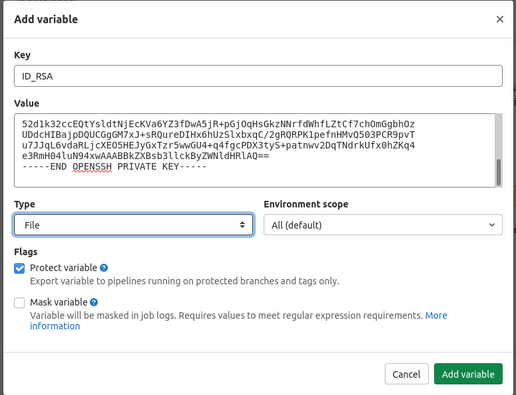
De même, nous allons créer une Variable pour l'IP de notre serveur de PréProduction :
- Key: SERVER
- Value: Votre adresse IP
- Type: Variable
- Environment Scope: All (default)
- Protect variable: Checked
- Mask variable: Checked
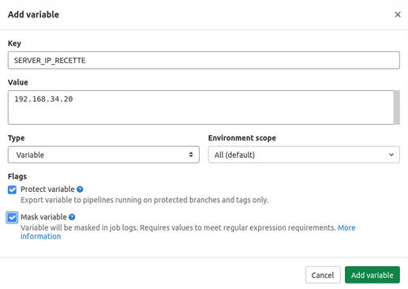
Enfin, une dernière variable pour notre utilisateur :
- Key: SERVER_USER
- Value: deployer
- Type: Variable
- Environment Scope: All (default)
- Protect variable: Checked
- Mask variable: Checked
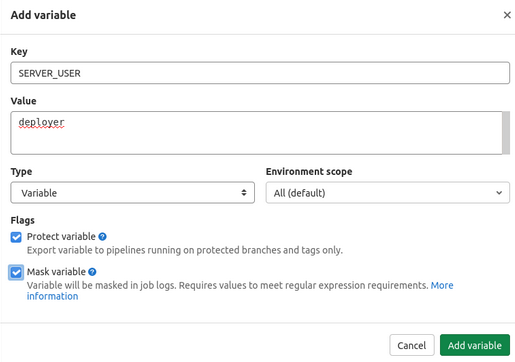
Faire de meme pour les variable de production (création du compte deployer, usermod, variable clé privé + IP du serveur
CI/CD
Voici le fichier complet qui permettra de réaliser le pipeline présenté lors du schema en tout début de cet article :
stages:
- test
- build
- deploy
variables:
TAG_COMMIT: $CI_REGISTRY_IMAGE/$CI_COMMIT_REF_NAME:$CI_COMMIT_SHORT_SHA
build_job:
# On prend la même image que celle utilisée dans le Vagrantfile pour être iso à l'environnement de travail de Sergio
image: debian:buster-slim
stage: test
script:
# On lance l'installation des packages nécessaires toujours pour être iso à l'environnement de Sergio
- apt-get update
- apt -y install rsync wget unzip lsb-release apt-transport-https ca-certificates
- wget -O /etc/apt/trusted.gpg.d/php.gpg https://packages.sury.org/php/apt.gpg
- echo "deb https://packages.sury.org/php/ $(lsb_release -sc) main" | tee /etc/apt/sources.list.d/php.list
- apt-get update
- apt install -y php7.4
- apt install -y php7.4-{bcmath,cli,curl,zip,sqlite3,mysql,xml,mbstring}
- wget https://getcomposer.org/composer.phar
- mv composer.phar /usr/bin/composer
- chmod +x /usr/bin/composer
- wget https://get.symfony.com/cli/installer -O - | bash
- mv /root/.symfony/bin/symfony /usr/local/bin/symfony
- composer require symfony/web-server-bundle 4.4
# On ne veut pas de Warning pour les Depreciations de Symfony
- export SYMFONY_DEPRECATIONS_HELPER=disabled
# On test la qualité de notre code
- ./bin/phpunit
# Puis on crée l'artefact qui contiendra l'ensemble des fichiers necessaires au fonctionnement de notre site
- rsync -av . --exclude 'Dockerfile' codequality-results/
artifacts:
paths:
- codequality-results/
image_job:
image: docker:latest
stage: build
# Appel de la dépendance afin de pouvoir utiliser l'artefact construit précédemment
dependencies:
- build_job
script:
# On construit notre image docker en utilisant l'artefact précédemment crée
- docker build --build-arg ARTIFACT_NAME="codequality-results/" -t $TAG_COMMIT .
# On se connecte à notre registry
- docker login -u $CI_REGISTRY_USER -p $CI_REGISTRY_PASSWORD $CI_REGISTRY
# Et on pousse notre image docker dans notre registry afin de pouvoir l'utiliser par la suite
- docker push $TAG_COMMIT
deploy_staging:
# Ici on prend une image très light car le seul besoin est de lancer notre conteneur sur la machine distante
image: alpine:latest
stage: deploy
script:
#On retire les permissions de tout le monde sauf pour le propriétaire de la clé privée. Prérequis necessaire pour éviter que SSH ne refuse de travailler avec cette clé
- chmod og= $ID_RSA_RECETTE
- apk update && apk add openssh-client
# On demande d'utiliser le fichier de la clé privée (variable ID_RSA_RECETTE crée de type fichier) et d'ajouter automatiquement de nouvelles clés d’hôte aux fichiers hôtes connus (StrictHostKeyChecking=no)
- ssh -i $ID_RSA_RECETTE -o StrictHostKeyChecking=no $SERVER_USER@$SERVER_IP_RECETTE "docker login -u $CI_REGISTRY_USER -p $CI_REGISTRY_PASSWORD $CI_REGISTRY"
- ssh -i $ID_RSA_RECETTE -o StrictHostKeyChecking=no $SERVER_USER@$SERVER_IP_RECETTE "docker pull $TAG_COMMIT"
- ssh -i $ID_RSA_RECETTE -o StrictHostKeyChecking=no $SERVER_USER@$SERVER_IP_RECETTE "docker container rm -f testSRY || true"
- ssh -i $ID_RSA_RECETTE -o StrictHostKeyChecking=no $SERVER_USER@$SERVER_IP_RECETTE "docker run -d -p 8081:8889 --name testSRY $TAG_COMMIT"
environment:
name: PreProduction
url: http://recette.devops.oc:8081/
only:
- master
deploy_prod:
image: alpine:latest
stage: deploy
script:
- chmod og= $ID_RSA_PRODUCTION
- apk update && apk add openssh-client
- ssh -i $ID_RSA_PRODUCTION -o StrictHostKeyChecking=no $SERVER_USER@$SERVER_IP_PRODUCTION "docker login -u $CI_REGISTRY_USER -p $CI_REGISTRY_PASSWORD $CI_REGISTRY"
- ssh -i $ID_RSA_PRODUCTION -o StrictHostKeyChecking=no $SERVER_USER@$SERVER_IP_PRODUCTION "docker pull $TAG_COMMIT"
- ssh -i $ID_RSA_PRODUCTION -o StrictHostKeyChecking=no $SERVER_USER@$SERVER_IP_PRODUCTION "docker container rm -f testSRY || true"
- ssh -i $ID_RSA_PRODUCTION -o StrictHostKeyChecking=no $SERVER_USER@$SERVER_IP_PRODUCTION "docker run -d -p 8082:8889 --name testSRY $TAG_COMMIT"
environment:
name: Production
url: http://production.devops.oc:8082/
# Le "when" permet d'indiquer que nous souhaitons valider humainement avant livraison en production
when: manual
only:
- master
Déploiement
Pour le déploiement en PréProduction, ce dernier est automatique. Par contre, pour le deployer en Production, il vous faudra cliquer manuellement sur le bouton adéquate. Cela permet de verifier que l'ensemble du code fonctionne correctement
Rollback
Tout comme le déploiement en Production, le Rollback est une action manuelle que vous pouvez réaliser simplement par un clique sur le bouton suivant :
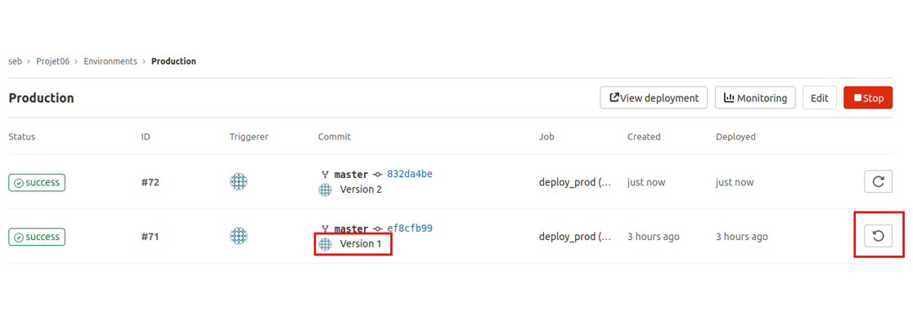